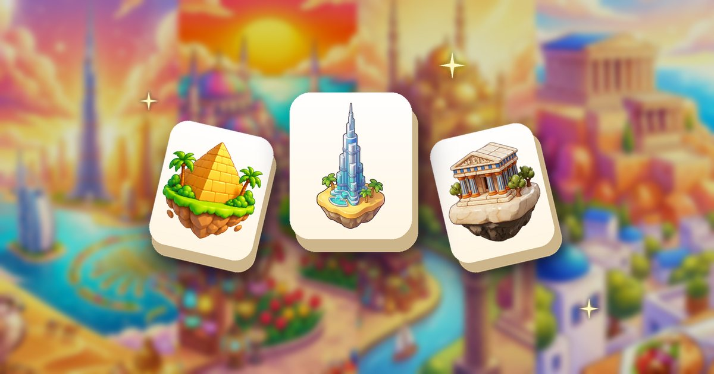
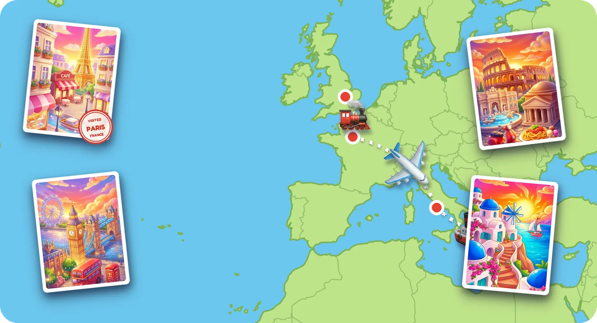

Games to Play on a Plane Without Wi-Fi

The games that work best on a plane are ones that run fully in airplane mode, come in short levels you can pause, and go easy on your battery: offline puzzle, word and card games are reliable picks. Download them and open them once before you board, because in-flight Wi-Fi is often slow, paid or missing altogether.
A long flight is one of the few times your phone is fully cut off. That makes it a good moment for games, as long as you prepare a little. Here is what to look for, how to test your games at home, how to plan for a long-haul flight and how to make your battery last until landing.
What makes good games to play on a plane
Not every game you love at home survives a flight. Before you pack your phone, check that your games tick these boxes:
- They work with no connection. Anything that needs a server, an account login or online opponents is out.
- Short levels. Meal service, turbulence announcements and the seatbelt sign interrupt you all the time. Levels of a few minutes fit those gaps.
- No timers. A game that punishes you for looking away is frustrating when the flight attendant asks what you want to drink.
- Playable in silence. You should be able to enjoy it with the sound off, or with headphones so your neighbors can rest.
- Plenty of content. On a twelve-hour flight, a game with a handful of levels runs out before the second meal.
Airplane mode games: test them before you board
The worst moment to find out a game needs internet is at cruising altitude. Do this the day before your trip:
- Download your games at home on Wi-Fi and install any pending app updates, so nothing asks to update mid-flight.
- Open each game and play a level while you are still connected.
- Switch on airplane mode, close the games completely and open them again.
- Play a couple of new levels and check that your progress is still there after closing the game.
- Remove from your flight list any game that asks you to log in or shows a "no connection" screen.
We go deeper into what "offline" really means, and what changes in free games without a connection, in our guide to offline games with no Wi-Fi.
Games for long flights: plan your entertainment
On a long-haul flight, variety beats a single favorite. A simple plan that works for many travelers:
- One puzzle game with lots of levels as your main companion, for the long stretches between meals.
- One word or card game for a change of pace when your eyes need something different.
- Downloaded movies, shows or books for when you want to stop tapping altogether.
Games with a sense of progress, like a map to cross or a collection to complete, work especially well in the air: there is always a next goal, and you land with something to show for the hours spent in your seat.

Save battery in the air
Games are only fun while your phone is alive, and not every seat has a working charger. A few habits stretch your battery:
- Keep airplane mode on. A phone that keeps searching for signal it can't find uses extra power.
- Lower the screen brightness. In a dark cabin you need much less than you think.
- Turn off vibration and any sounds you don't need inside your games.
- Close apps running in the background before takeoff.
- Board with a full charge and bring a power bank. Check your airline's rules: power banks usually have to travel in your carry-on, not in checked luggage.
Travel games offline for the whole trip
The flight is only part of the journey. Offline games also cover the airport queue, a long layover with patchy Wi-Fi, the train into the city and those first days abroad when you would rather not pay for roaming. And there is something nice about playing a travel-themed game while you travel: if you like the idea of collecting cities and postcards, our travel puzzle game guide shows how a trip around the world works in Trip Sort.
How to do it in Trip Sort
- Before the trip, download Trip Sort free on iPhone or Android and open it once. There is no account and no sign-up.
- Switch on airplane mode when the crew asks. Every level plays with no internet, and offline there are simply no ads.
- Tap the gear icon to set Sound, Music and Vibration. Each has its own switch, so you can play in silence or with headphones and the calm music.
- Play at your own pace. There are no timers, so the meal cart or a turbulence announcement never costs you a level.
- Travel while you fly: every level adds a piece to the city's postcard, and finishing a city stamps your passport before you move on by plane, ship, train or bus. Tap to skip the animation if you want.
- No need to ration levels: there are 255 destinations with 12 levels each, over 3,000 levels in total.
Pro tip: the Shop is not available offline, so if you want the Remove Ads purchase, sort it out at home on Wi-Fi before you leave for the airport.
Questions people also ask
What games can I play on a plane without Wi-Fi?
Any game that works fully offline: many puzzle, word and card games do. Test them in airplane mode at home before you fly. Trip Sort plays every level with no internet.
Can you play mobile games in airplane mode?
Yes, as long as the game doesn't need internet. Airplane mode turns off your phone's connections, not its apps, so offline games work normally.
How do I keep my phone charged on a long flight?
Board with a full battery, keep airplane mode on, lower the brightness, turn off vibration and bring a power bank in your carry-on. Use the seat charger if your plane has one.